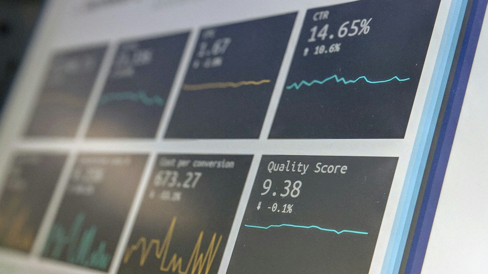

Beyond the Price Tag: Unpacking Pakistan's Electric Vehicle Policy Reforms
New government policy dramatically slashes import duties on electric vehicles, aiming to democratize access to sustainable transport for Pakistanis. This analysis delves into the mechanics of these reforms, assessing their potential to accelerate EV adoption amidst persistent infrastructure and economic challenges.

From the smog-laden skies of Lahore, where traffic gridlock is a daily torment, to the bustling arteries of Karachi's I.I. Chundrigar Road, the narrative around Pakistan's environmental and economic future is shifting. For years, the dream of affordable, sustainable transport seemed distant, overshadowed by escalating fuel prices and import costs. But a recent, pivotal government policy, quietly rolled out, aims to change that. By strategically slashing import duties on Electric Vehicles (EVs), Islamabad is signaling a clear intent: to make electric mobility not just a luxury for the few, but an attainable reality for a wider segment of the population, potentially alleviating both environmental and financial burdens.
This significant pivot is rooted in concrete regulatory adjustments. The Federal Board of Revenue (FBR) has issued revised customs valuation rulings and tariff concessions, directly targeting various EV segments. Simultaneously, the State Bank of Pakistan (SBP) has introduced circulars aimed at easing import financing mechanisms for certain EV components and Completely Built Units (CBUs), albeit still within the broader context of foreign exchange constraints. These combined efforts are designed to directly reduce the landed cost of EVs, a move anticipated to shave off hundreds of thousands of rupees from the retail price of popular models. For instance, a mid-range EV that might have previously retailed for upwards of PKR 7 million could now see its price drop considerably, making it competitive with conventional petrol cars.
Yet, the road to widespread EV adoption is not without its unique challenges, despite the policy impetus. While gleaming Teslas and BYDs are increasingly spotted navigating Islamabad's Blue Area, signaling early adoption among the affluent, the crucial backbone of any EV ecosystem—charging infrastructure—remains nascent. Public charging stations are few and far between, forcing many early adopters to rely solely on home charging. The local automotive industry, while showing interest, is still largely geared towards traditional internal combustion engine (ICE) vehicles, and the ecosystem for EV parts, maintenance, and skilled technicians is only just beginning to take root, unlike the vibrant, albeit chaotic, repair shops around Lahore's Hafeez Center for electronics.
This report dives deeper than just the headline price cuts. We will critically examine the policy's fine print, its potential economic ripple effects, and the formidable hurdles that still stand in the way of Pakistan's electric revolution. What role will NEPRA play in standardizing charging tariffs? Can local banks like HBL and MCB truly step up with accessible green financing? And how will the policy impact the 'Make in Pakistan' narrative for the auto sector? This isn't just about cheaper cars; it's about re-engineering a nation's mobility paradigm, one charging plug and battery cell at a time.
The Regulatory Architecture of EV Affordability: FBR and SBP Interventions
The cornerstone of Pakistan's renewed push for EV adoption lies in targeted regulatory interventions by key economic institutions. The FBR's latest policy adjustments have primarily focused on rationalizing import duties and taxes across different categories of electric vehicles. Specifically, significant reductions have been observed in Customs Duty (CD) and Additional Customs Duty (ACD) for both Completely Built Units (CBUs) and Completely Knocked Down (CKD) kits, with higher concessions generally offered for smaller, more accessible EV models. These reductions are crucial, as import duties traditionally constitute a substantial portion of an imported vehicle's final price, often adding 25% to 50% or more depending on engine capacity and category. By recalibrating these tariffs, the government aims to directly lower the barrier to entry for consumers, incentivizing the shift away from fossil fuels.
Furthermore, the State Bank of Pakistan has played a supportive role, albeit a cautious one given the nation's ongoing foreign exchange challenges. While direct subsidies are not the focus, SBP circulars have aimed to streamline the import process for EV-related components, prioritizing them where possible to facilitate local assembly. This subtly encourages local manufacturing and assembly under the CKD regime, moving away from a full reliance on CBU imports. The goal is to nurture a domestic EV industry that can eventually reduce the reliance on costly foreign imports, create jobs, and foster technological transfer, potentially with future collaboration opportunities within designated zones like the Special Technology Zones Authority (STZA) in Islamabad.
Navigating the Charging Chasm: Infrastructure and Grid Reliability
Despite the enticing price reductions, the practical reality of owning an EV in Pakistan grapples with a significant hurdle: the lack of robust charging infrastructure. Currently, public charging stations are sparse, primarily concentrated in major urban centers and along limited stretches of motorways. This forces a heavy reliance on home charging, which, while convenient for many, presents its own set of challenges, including slow charging times and potential strains on household electricity connections. The disparity between the ubiquitous petrol pumps and the handful of EV charging points highlights a critical infrastructure gap that needs urgent attention if mass adoption is to become a reality. This is not unlike the early days of internet penetration where local ISPs like PTCL and Nayatel faced immense challenges in laying down reliable fiber optic networks across vast, underdeveloped areas.
Beyond the physical stations, the stability and capacity of Pakistan's national power grid are paramount. NEPRA (National Electric Power Regulatory Authority) has a crucial role to play in developing appropriate tariff structures for EV charging – balancing affordability for consumers with commercial viability for charging station operators. The grid, already prone to load shedding and capacity issues, must be prepared for the increased demand an electrified fleet would impose. Smart grid solutions, demand-side management, and integrating renewable energy sources into the charging network are essential to prevent further stress on the existing infrastructure and ensure a reliable, sustainable power supply for Pakistan's burgeoning EV fleet. Without robust power and a clear pricing structure, even the cheapest EV remains impractical.
Driving Demand: Financing, Localisation, and Consumer Trust
Even with reduced prices, the upfront cost of an EV remains substantial for the average Pakistani consumer. This is where the role of local financial institutions becomes critical. While some banks, such as HBL and MCB, have begun to offer 'green financing' options, these schemes often come with stringent eligibility criteria and higher interest rates compared to conventional vehicle financing. There's an urgent need for more accessible, long-term, and low-interest financing solutions tailored for EVs, potentially backed by government guarantees or incentives, to truly democratize ownership. Consumer apprehension regarding battery life, replacement costs (which can be substantial, often in the range of PKR 1.5 million to PKR 3 million for a full pack), and the resale value of EVs also needs to be addressed through robust warranty programs and transparent after-sales services.
Building consumer trust also ties into the 'Make in Pakistan' narrative. While CBU imports kickstart the market, the long-term vision must pivot towards local assembly and manufacturing. This not only saves precious foreign exchange but also creates jobs, fosters technological transfer, and establishes a robust local supply chain for parts and services. The government’s tariff differentiation between CBUs and CKD kits is a step in this direction, incentivizing local assemblers. However, for a true localization, attracting foreign direct investment into component manufacturing, particularly for critical elements like batteries, is crucial. This would require consistent policy frameworks, tax holidays, and a skilled labor force, moving beyond assembly to true indigenous production, and ensuring that the entire value chain, from raw materials to recycling, is considered for a sustainable ecosystem.
Comparative EV Customs Duty Structure (Illustrative)
To illustrate the tangible impact of the recent policy adjustments, let's examine a hypothetical comparison of customs duties for different EV categories. These figures represent general trends and may vary based on specific vehicle models and government notifications. This simplification helps us understand how the FBR’s revised valuation rulings translate into real-world price differences for consumers.
It is important to note that beyond customs duties, other taxes such as Sales Tax, Withholding Tax, and Regulatory Duty also contribute to the final price. However, the reductions in Customs Duty often have a cascading effect, leading to overall lower prices. These changes reflect a deliberate effort to make EVs more competitive against traditional internal combustion engine vehicles, which are also subject to their own complex tax structures. The aim is to bridge the price gap and make EVs a more attractive proposition for a wider demographic across Pakistan's urban centers like Lahore, Karachi, and Islamabad.
Executive Takeaways & Key Insights
- Government policy significantly reduces EV import duties, aiming to make electric vehicles more accessible and affordable for Pakistani consumers.
- Critical infrastructure development, particularly a widespread public charging network, is essential to complement price reductions and accelerate adoption.
- Local financial institutions must introduce more flexible and attractive green financing options to ease the upfront cost burden on potential EV buyers.
- Long-term EV growth hinges on consistent policy support, a robust local manufacturing ecosystem, and strong consumer confidence in after-sales services.
Frequently Asked Questions
How much cheaper are electric vehicles now after the new policy?
The price reduction varies significantly by EV model and category. However, with the new policy slashing customs duties, consumers can expect potential savings ranging from PKR 300,000 for smaller city EVs to well over PKR 1 million for premium models, making them substantially more competitive against petrol vehicles.
Where can I charge an EV in Pakistan, and what are the associated costs?
Public charging infrastructure is still limited, mainly found in major cities like Lahore, Karachi, and Islamabad, and along select motorways. Most EV owners currently rely on home charging. NEPRA is working on tariff guidelines; commercial charging rates vary, while home charging costs are based on residential electricity tariffs (e.g., Rs. 14-25/KWH depending on slab).
What about battery life and replacement costs for EVs in Pakistan?
Most EV batteries come with warranties typically ranging from 8 to 10 years or 160,000 km. While battery degradation is gradual, replacement costs can be high, often between PKR 1.5 million to PKR 3 million. This necessitates robust after-sales support and potentially local battery refurbishment centers to instill consumer confidence.